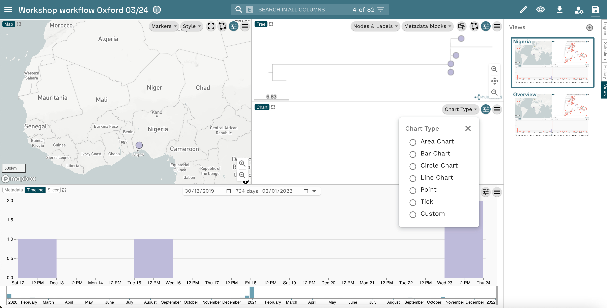
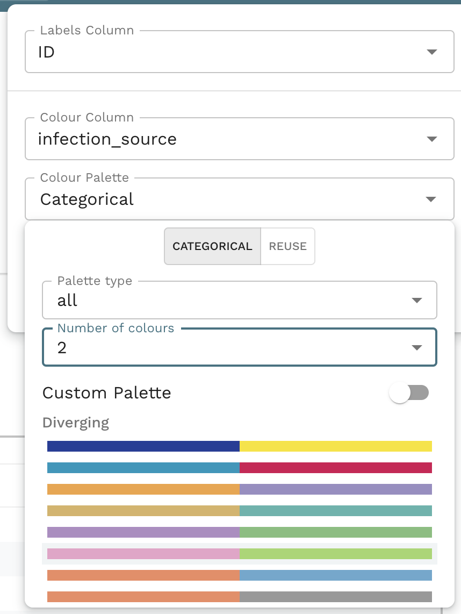

SESSION 6 - Data visualisation and Interpretation with Microreact
Module Leads: Julio Diaz Caballero, Natacha Couto, Georgina Lewis-Woodhouse, Emmanuelle Kumaran, Nabil Fareed-Alikhan, Sophia David, Monica Abrudan
based on the exercise developed by Silvia Argimon
Table of contents
Introduction
Microreact (https://microreact.org/) is a web-based application for the provision of interactive data visualisations. It enables the rapid generation and linkage of trees, maps, networks, charts and timelines, enabling epidemiologists and key decision makers to react faster and with greater accuracy. Microreact can be deployed securely on a local server, behind firewalls and adhering to local data governance. Users can make their Microreact projects findable on the network, or share them privately with another user by sharing a downloaded project or using secret links. Microreact projects for public consumption can be shared on the public Microreact site.
Objectives
At the end of this session the participants will be able to:
- Visualise a tree, metadata, a timeline and a map using Microreact
- Use slices in Microreact
- Create Views in Microreact
- Interpret the results
Data visualisation and Interpretation with Microreact
https://microreact.org/
Open the Microreact link in the output from data-flo. It should look something like this:

Now change the colour column to “Country”. Click on the eye icon at the top right of the page. Select “Country” from the Colour Column dropdown list.

Add a timeline by clicking on the pencil and select “Create New Timeline”. Select the placement for the timeline on your dashboard. Select “One column: Formatted Values” from the Temporal Data Type drop-down list. Finally select “collection_date in the temporal data column drop-down list.

Add Metadata blocks to your tree. Select the sliders icon, then the Metadata blocks and choose the variables you would like to explore.

Add a new view. On the right of your screen, click on the “view” button. When the view panel appears, click on the “plus” button.

The first view will be the current view you have. Right click on the menu of the new view and rename it. Click on the “plus” button and add another view. Rename it to “Nigeria” .

Now use the data splicer to select a subset of data. To do so click on the pencil on the top right of the screen and select “Create new data splicer” from the drop-down menu. Position the panel on the screen and click on the “choose column” button. In the new window, select “country” from the data column drop down and click close. Click the Nigeria checkbox.

Readjust the map and tree panels to focus on the selected data. On the tree, right click on the branch with all the samples and select “view subtree”. Zoom the map to focus on Nigeria.

Save changes to view by right clicking on the view and selecting the “Update view” option from the drop-down menu. Edits are not automatically saved, remember to save your edits before moving away from the view or you will lose them.

Add a new chart.

After narrowing down to data from Nigeria, the colour column no longer provides useful information. Try changing it to a more informative column and experimenting with different colour palettes.

Web colours
Web colours are used on web pages, such as the microreact.org projects, and are usually specified in hexadecimal format preceded by a number sign (or hashtag sign if you were born before the Jurassic period). For example, #FFFFFF is the hexadecimal code (or hex code) for the colour “white”, #000000 is the hex code for the colour “black”, and #FF00FF is the hex code for the colour “magenta”. For more information on the format of the hexadecimal code see Wikipedia page https://en.wikipedia.org/wiki/Web_colors
Useful websites to work with web colours:
ColorBrewer
https://colorbrewer2.org/#type=sequential&scheme=BuGn&n=3 Colour palettes for maps
ColorHexa
https://www.colorhexa.com/ Get complementary colours, colour gradients, etc.
Coolors
https://coolors.co/palettes/trending Colour palette generator
Wes Anderson colour palettes
https://github.com/karthik/wesanderson Hipster colour palettes inspired by Wes Anderson movies
Bonus activities
1. Create a microreact project using a metadata in csv format and a phylogenetic tree.
- Click on the menu icon at the top left of the screen

- Click on
Upload

- Click on the
+symbol at the bottom right of the screen.

- Select
Browse Files

Choose the files
tree.nwkandepi_data.csv, and click on theOpenbutton (These files were downloaded in the dataflo section).Click on
Continuein the next prompts.Your view will look like this:

- You can add a Timeline by clicking on the
pencilicon at the top left of the screen, and clicking onCreate New Timeline

- Then position the new panel by dragging the pointer to the bottom panel.

- Finally, select “One column: Formatted Values” from the
Temporal Data Typedropdown list, and “Collection Date” from theTemporal Data Columndropdown list. Click onCLOSE

2. Create a Microreact project from a Google Spreadsheet
- Open this Google spreadsheet

- Make a copy of this in your own Google account by selecting
Make a copyfrom theFilemenu item. When prompted, click onMake a copy. This will open a separate tab where the copy will be available.


- Set access to shareable by clicking on the
Sharebutton at the top right of the screen. A dialogue screen will pop up, here, click on theRestrictedbutton, selectAnyone with the link, and click onDone

- Now to publish the google spreadsheet click on the
Filemenu item, selectShare, and click onPublish on web

- In the popup message click on
Web page, and selectComma-separated values (.csv). Also, make sure theAutomatically republish when changes are madeoption is turned on under thePublished content and settingssection


- Confirm your choices in the popup message clicking on
OK. This will provide more details about your Google spreadsheet, copy the url.


- Go to microreact.org, and select
Uploadfrom the main menu.

- Select the plus icon at the bottom right, and click on
Add URLs

- Paste the url from step f and select
Data (CSV or TSV)underFile kind. Finally click onCONTINUEto see your microreact.

- You should get a screen like this!

The materials provided in this repository are FREE to use. This work is licensed under a Creative Commons Attribution 4.0 International License. Reuse is encouraged with acknowledgement.